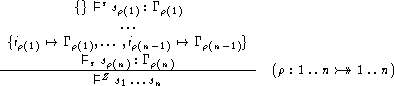

WG.48.1: Independence of Textual Order of Sections
Proposal for the Z Standard, by Wolfgang Grieskamp (wg@cs.tu-berlin.de), November 11, 1998, (v2) , postscript version
The order how sections appear in a Z specification document is arbitrary. The parent-relation of sections must be acyclic.
Shortly: the adequate way to structure a specification document with multiple sections is not always bottom-up. (As far as I know, the panel already agreed that section reordering is useful in general.)
Type Inference Rules, Clause 13.2.1.1 (the according clause in 12, resp.): add a comment such as:
The order how sections appear in a Z specification document is arbitrary. The parent-relation of sections must be acyclic.Introduce reordering (and cycle check) as a condition to the rule. This could be something along:

Tools can easily recognise the syntax of section paragraphs already at scanning time. So a three-phase architecture of parsing can be implemented: lexical analysis, section reordering (by topological sorting), and syntax analysis.